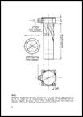
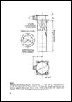

Deutsche Flugzeug-Ausrüstungen 1928 - 1945

Instrumente und Schaltgeräte
59,00€
2,16 GB
Kompendium, gesamt 6.750 Seiten bestehend aus:
1. Firmenunterlagen
1.1 ASKANIA Bordgeräte
Aero 1- 95, Luftfahrt-Instrumente 1933 – 1935
Aero 1 – 80, Luftfahrt-Instrumente 1934 – 1936
Aero 104a, Luftfahrt-Instrumente 1935
Aero 111 Sammelmappe Bordgeräte, ca. 1939
Aero 210 – 212, Kurssteuerungen, 1939
Einbauvorschriften für Luftfahrt-Geräte, 1936 – 1939
Bordgeräte für Segelflugzeuge und Motorflugsport,1935 u. 1939


1.2 BOSCH Luftfahrt-Geräte
Flugzeug-Ausrüstung für Flugmotoren, 1929
Erzeugnisse für Flugzeuge, 1934 und 1936
Angebots-Zeichnungen von Bosch-Flugzeug-Zubehör, 1937
Luftfahrt-Geräte. Katalog, 1940 - 1942
Luftfahrt-Geräte, Wartung und Instandsetzung, 1942
Luftfahrt-Geräte, Geräte-Handbuch, 1942
Technische Druckschriften Anlasser, Generatoren, Zündung, Zündkerzen, Entstörung,
Schalter und Schaltschütze, Elektromotoren, 1937


1.3 Bruhn-Werke
Feldprüfgerät FH 2. Gerät zur Prüfung von Staurohranlagen. ca. 1940


1.4 DEUTA-Werke
Technische Übersichtsblätter, 1938
Ferndrehzahl-Messanlage Type EF 9 für Antrieb durch biegsame Welle, 1937
Ferndrehzahl-Messanlage Type EF 10 mit Flanschanschluss, 1937
Sogpumpen-Antrieb für Flugbetrieb, 1936
1.5 R. FUESS, Techn. Präzisions-Messinstrumente
Meß- u. Schreibgeräte, Fein- u. Grob-Höhenmesser, Ladedruckmesser, 1933 – 1940
1.6 Hartmann & Braun AG, Meß- und Regeltechnik
Einbau- und Gebrauchs-Vorschriften, 1941
Elektr. Temperaturmessung in Flugzeugen,
Elektr. Vorratsmessung in Flugzeugen
Elektr. Reststandsmelder für Betriebsstoff in Flugzeugen
Flugzeug-Meßkoffer für Kontroll- und Abnahme-Messungen
Elektr. Fernmeßanlagen in Flugzeugen, 1938
Elektr. Temperaturmessung in Flugzeugen, 1937

 

1.7 Dr. Th. Horn, Apparatebau
Ferndrehzahlmesser, Variometer, Wendezeiger, Bordgeräte für Segelflug, 1940


1.8 Heinrich List, Elektrotechnik und Mechanik
Geräte-Katalog 1941


1.9 Michel, Fabrik für elektrische Geräte
Reihensteckvorrichtungen, Reihendoseneinsätze, Reihengehäuse, Reihensteckverteiler, Einzelteile, Deckprofile, Endteile, Berechnungsbeispiele, 1941


1.10 Siemens Luftfahrtgeräte
Fernantriebswelle, Luftüberwachungsgeräte, Luftfahrt-Kleinmotoren, Luftfahrt-Kabel


2. RLM – Druckschriften
2.1 Luftfahrt-Geräte Handbücher
D(Luft)T 5000 Askania Lgab8 und Lgab19, 1940
D(Luft)T 5004 Kontakthöhenmesser, 1942
D(Luft)T 5005 Fahrtmesser mit Höhenausgleich, 1942
D(Luft)T 5006 Vorratsmeßanlage, 1944
D(Luft)Tg5400 PDS Patin-Dreiruder-Steuerung, 1941
D(Luft)T 5405 Wendehorizont, Fl 22 410-1, 1943
D(Luft)T 7101 Abwurfwaffen-Automat RAB 14 d Beiheft 1, 1941
LDv 186 Reihen-Abwurf-Automat, RA 5, 1936
LDv 188 Reihen-Abwurf-Automat, RA 6, 1936
LDv 190 Reihen-Handschalter RH 14, 1939
LDv 208 Abwurf-Schaltkasten ASK-R, 1939
LDv 209 Schaltkasten ASL-L IX, 1940
LDv 240 Drehzahlmesser, 1935
LDv 242 Druckmesser, 1935
LDv 243 Vorratsmesser für Betriebsstoff, 1935
LDv 246 Fahrtmesser Lr 16r, Lr 19r mit Staurohren, 1935
LDv 248 Barometrische Luftdruckdosengeräte, 1935
LDv 251 Wendezeiger Lg 14r u. Empf.-Regler Lreg 4, 1935
LDv 253 Luftwaffen-Uhren, 1939
LDv 261 Flugzeug-Kompasse, Patin-Fernkompassanlage, 1938
LDv 262 Abdrift und Geschwindigkeitsmesser PZ 1, 1937
LDv 286/1 Bodenchronometer BC 1010, 1935
LDv 541 Schaltkasten ASK-V IX, 1936


2.2 RLM - Flugzeug-Ausrüstungsgeräte und Anforderzeichen (Fl-Nummern)
Mappe 1, Triebwerküberwachungs-, Triebwerks-, Flugüberwachungsgeräte, 1944
Mappe 2, Rettungsgeräte, Fallschirme, Gurte, Höhenatmungsgeräte, Feuerlöscher, 1944
Mappe 3, Gerätesätze, Steckverbindungen, Verständigungsgeräte, 1944
Mappe 10, Navigationsgeräte, Hilfsmaschinen, Seeausrüstung, 1943
3. Allgemeine Unterlagen
Absicherung elektr. Anlagen in Luftfahrzeugen von O. Ackermann, 1936


Elektrische Flugzeugausrüstung, Luftfahrt-Lehrbücherei, Band 5, 1942


Elektrische Flugzeugausrüstung, Dr. Matthiessen, 1938

Flugzeug-Instrumente, Flugzeugbau und Luftfahrt, Heft 20, 1937


Gerätekunde, Lehrblätter für die technische Ausbildung in der Luftwaffe, 1938


Die Flugzeuggeräte, Teil I, 1943


Die Flugzeuggeräte, Teil III: 1943


Bestell-Nr.: LAH-483
Deutsche Funkgeräte 1938 - 1944
49,00€
941 MB
Kompendium, gesamt 2.550 Seiten, bestehend aus:
FuG I und FuG II, Hilfsblätter für den Unterricht DS I und II, 1939
FuG IIIa, Geräte-Handbuch, 1940
FuG IIIa/U, Zusatzbeschreibung und Bedienungsvorschrift, 1941
FuG IV, Hilfsblätter für den Unterricht, 1938
FuG VII, D(Luft)T2401/2, Beschreibung der Bordfunkanlage in Bf 109 F, 1940
FuG VII, Zweirasten-Fernsteuerung FB 7, D(Luft)T 4011, 1942
FuG VIIa, Telefunken, Flugzeug-Sende-Empfangs-Anlage, ca. 1938
FuG VIII, Hilfsblätter für den Unterricht, Fachgebiet DS IV/G1, 1938
FuBl 1, D(Luft)T 4065, Funk-Landegerät,

FuBl 1 mit PSU. O, D(Luft)T 4202, Funklandegeraet FuBl I, 1941
PDU O-B, D(Luft)T 4205, Geraete-Handbuch, 1941
FuBl 2, D,(Luft)T 4058, Funk-Landegerät, Geräte-Handbuch, 1943
Lorenz Flugzeug Blindlandungsanlagen, 1936
Telefunken Flugzeug-Bordpeilanlage mit Peilempfänger, 1936
Telefunken Zielflug-Peilanlage P 63, ca. 1936
FuG X, D(Luft)T 4005/2, Fl-Bordfunkgerät, Geräte-Handbuch, 1941
FuG X K1L, Fl-Bordfunkgerät, 1941
FuG 10 K3, D(Luft)T 4005/4, Fl-Bordfunkgerätesatz, Geräte-Handbuch, 1943
FuG X, Peil G V und Fu Bl 1, D(Luft)T 4300, Prüfvorschrift, 1940
FuG 16, D(Luft)T 4005/3, Fl-Bordfunkgerät, Geräte-Handbuch, 1943
FuG 16 Z, ZS, ZE und ZY. Beschreibung, 1944
FuG 16 ZY, D(Luft)T 4069, Bordfunkgerät,1944
Prüftafel PT 16/17, D(Luft)T 4241, Geräte-Handbuch, 1942
Prüf-Quarz-Kontroller PQK 16, D(Luft)T 4200, Beschreibung, 1941
Fernantrieb FA 16, FBG 16, Geräte-Handbuch, D(Luft)T 4008, 1941
FuG 16 Z Fl.-Bordfunkgerät, Beschreibung und Betriebsvorschrift, 1943
FuG 17 Bordfunkgerät, Arbeitsunterlagen, 1941
FuG XXI, Hilfsblätter für den Unterricht, 1939


FuG 25 a, D(Luft)T 4010, 1943
FuG 25 Fl-Bordfunkgerät, D(Luft)T 4100, 1941
FuG 101, (FuNG 101) Elektrischer Höhenmesser, 1944
FuG 101, Vorläufige Beschreibung und Betriebsvorschrift, 1943
FuG 101, D(Luft)T 4062, Elektrischer Höhenmesser, Handbuch (unvollst.), 1942
FuG 102 A, D(Luft)T 4113, 1944
FuG 120, Telefunken, Funk-Navigationsanlage, 1944
FuG 200, D(Luft)T 4108/1, Geräte-Handbuch, 1944
FuG 202, D(Luft)T 4103, Geräte-Handbuch, 1943
FuG 212, D(Luft)T 4109, Geräte-Handbuch, 1943
Fibel zu Bordfunkprüfgeräten, 1944
FuG 214, D(Luft)T 4107, Geräte-Handbuch, 1943
FuG 216, D(Luft)T 4111, Geräte-Handbuch, 1943


FuG 216, D(Luft)T 4111/1, Geräte-Handbuch, 1943
FuG 217, Neptun RII, Kurzbeschreibung, Bedienungsanweisung, 1944
FuG 220, D(Luft)T 4112/1, Geräte-Handbuch, 1943
FuG 220, D(Luft)T 4112/2, Teil 2, Inhalt: Allgemeines und Betriebsvorschrift, 1943
FuG 227, Flensburg, Prüfungs- und Entstörfibel, 1944
FuG 301, D(Luft)T 4102, Gerätehandbuch, 1942
Funk-Horchempfänger E 351, Beschreibung und Betriebsvorschrift, 1944
NA 6 Netzanschlussgerät, D(Luft)T 4401, Geräte-Handbuch, 1941
NS 4, Notsendegerät, D(Luft)T 4104, Geräte-Handbuch, 1943
Bestell-Nr.: LAH-1057-1
Fernsprech- und Fernschreibgeräte
29,00€


86 MB
Kompendium, gesamt 644 Seiten, bestehend aus:
LDv 703/3a, Luftnachrichtentruppe, 1942
LDv 703-3b, Luftnachrichtentruppe, 1942
Bestell-Nr.: LAH-390
Navigation, Kompasse, Kurssteuerungen, Bodengeräte
49,00€
850 MB
Kompendium, gesamt 2.220 Seiten, bestehend aus:
AEG Flughafengeräte, AEG-Landebahnleuchte, AEG-Bodenfeuer und -Drehfeuer, 1940
Ansteuerungs-Sender AS 2, D(Luft)T 4452, Geräte-Handbuch, 1941
Askania Kurssteuerung Lstz 14 c, Einbauvorschrift, 1941
Askania Kurssteuerungen, Werksprospekte, ca. 1940
Libellenoktant LDvT 4051, Beschreibung, Bed.- u. Wartungsvorschrift, Fl 23750, 1940
Libellenoktant, LDvT 4051/1, Fl 23750, 1944
Lorenz, Flugzeugstation SEZ. 26248 a, ca. 1936
Lorenz, Lehrmodell für Anfeuerungsfunkfeuer, Beschreibung, 1938
Lorenz Flugzeug-Blindlandungsanlagen, Sender und Empfänger, ca. 1938
Lorenz Landefunkfeuer, UKW-Leitstrahlverfahren, ca. 1938
Lorenz, Satz Funkgerät 100 Watt, Werkschrift 3017, 1942
Patin Fernkompass-Anlagen, Beschreibung und Bedienungsvorschrift, 1944
Patin Kurssteuerung - Dreiruder-Steuerung, D(Luft)Tg5400 Beschreibung, 1941
Patin-Kurszentrale PKZ 13, Vorläufige Anleitung, 1940
Patin-Dreirudersteuerung, Vorläufige Einbauvorschrift, 1940, 98 S.
Patin-Fernkompaß-Anlage, LDv 261 /x, Einbau, Beschreibung, 1937 – 1940
Patin Jägerkurs-Steuerung KS 12 b-1, Kurzbeschreibung, Bedienungsanweisung, 1944
Bordpeilgerät Peil G V, D(Luft)T4057, Geräte-Handbuch, 1941
APS 4 Prüfsender für Peil G IV und Peil G V, Ln 28640, Geräte-Handbuch, 1941
Philips Langwellen-Anlage V.R. 5, ca. 1936
Plath Dreieckrechner DR 2. Auszug aus „Lehrbuch über Luftnavigation u. Blindflug“, 1940
SATT Zielflug-Peilanlage, ca. 1936
Siemens Kurssteuerung K4c, Gerätebeschreibung, 1937
Siemens Kurssteuerungen K4i, K4i1, K4k, K4k7, 1939

Siemens Kurssteuerung K4w und K4ü, LDV 254/1 und LDV 254/3, 1937 – 1939
Siemens-LGW Kurssteuerung K4ü, Werkschrift, 1939
Siemens-LGW Kurssteuerung K 4 ü, Justieranweisung, 1941
Soko Sonnenkompass, Beschreibung, Bedienungsanweisung, ca. 1930
Telefunken Blindlandeanlage, Hilfsblätter für den Unterricht U 1/2, 1937
Telefunken Blindlandeanlage, Hilfsblätter für den Unterricht U 1/3, 1937
Telefunken Flugzeugstation Stat. 268, ca. 1936
Telefunken Flugzeug-Bordpeilanlage mit Peilempfänger, ca. 1930
Telefunken Zielflug-Peilanlage 128 N, ca. 1939
Telefunken Zielflug-Peilanlage P.63N, ca. 1936
Telefunken FuG 120 Funk-Navigationsanlage, Beschreibung, Betriebsvorschrift, 1944
Luftfahrt-Navigation, Handbuch für den Dienstunterricht, Theo E. Sönnichsen, 1940
Flugnavigation, D(Luft)1255/1, Leitfaden der Flugnavigation, 1940
Die Funknavigation der Luftfahrt, 1939
Navigationsvorschrift der Luftwaffe, Teil 3, LDv 55/3, 1940
Bestell-Nr.: LAH-493
Reflexvisiere
29,00€
38 MB
Kompendium, gesamt 189 Seiten, bestehend aus:
REVI 1, LDv 102, Beschreibung und Bedienungsvorschrift, 1935
REVI E2A D(Luft)T 6401, Waffen-Handbuch, 1941
REVI 3a und 3b LDv 103, Beschreibung u. Bedienungsvorschrift, 1935
REVI 3c und 3d, Beschreibung und Bedienungsvorschrift, ca. 1939
REVI 4, Werkschrift, Beschreibung
REVI C/12 A LDv 108, Beschreibung und Bedienungsvorschrift, 1937
REVI C/12 C, LDv 108a, Beschreibung u. Bedienungsvorschrift, 1940
REVI C/12 D, Werkschrift, Bedienungs-Anweisung, 1942
REVI 16 A, D(Luft)T 6400, Waffen-Handbuch, 1941
REVI 16 B, D(Luft)T 6403, Waffen-Handbuch, 1942
REVI 25 B, D(Luft)T 6402, Waffen-Handbuch, 1941
Bestell-Nr.: LAH-132
Lotfernrohre, Rückblick- und Bomben-Fernrohre
29,00€
77 MB
Kompendium, gesamt 328 Seiten, bestehend aus:
Lotfe 7C, Wirkungsweise und Wartung, D(Luft)T 7001, 1941
Lotfe 7D und Lotfe 7C/D, Leitfaden, D(Luft)5205, 1942
BZG 2 und Lotfe 7, Prüfkoffer, D(Luft)T 7002, 1941
RF 1 A, Rückblickfernrohr, Waffenhandbuch, D(Luft)T 6410, 1942
AF Abwurffernrohr, Goerz-Boykov, Beschreibung u. Betriebsvorschrift, ca. 1928
Bofe 1, Bombenfernrohr 1, Bedienungs- und Wartungsvorschriften, ca. 1928
ZF 515 c, Flieger-Zielfernrohr, Goerz, Beschreibung, ca. 1928
Bestell-Nr.: LAH-463
Reihenbildgeräte und Kameras
29,00€


24 MB
Kompendium, gesamt 330 Seiten, bestehend aus:
1. Reihenbildner Rb
Rb 20/30, D(Luft)T5100/1, 1940
Rb 50/30, D(Luft)T5100/2, Beschreibung u. Bedienungsanweisung, 1940
Rb 50/30, Zeiss-Firmenschrift M 134 d, 1939
Rb 75/30, D(Luft)T5100/3, Beschreibung und Bedienungsanweisung, 1940
Rb 75/30, Zeiss-Firmenschrift ZK K 2004, Automatisches Reihenbildgerät, 1942
Rb 75/30, Zeiss-Firmenschrift M 195 d, Beschreibung, 1941
Rb 20/30, Rb 50/30 und Rb 75/30, D(Luft)T5106, Geräte-Handbuch, 1942
Rb, Beschreibung, Gebrauch und Instandsetzung, 1941
Filmkassette Fk 30, Firmenschrift cxn, Beschreibung und Kennwerte, Fl 38 802
FK 3030/32, Meßfilmwechselkassette, ca. 1936
FWKC/2 Filmwechselkassette, Beschreibung und Bedienungs-Anleitung, ca. 1936
2. Kameras
FK 25, Flieger Kamera 13x18cm, ca. 1928
HK 12,5, Handkammer 12,5 cm 7x9, Fl 38 004, 1934
HK 19, Fliegerkammer, 13 x 18 cm, Gebrauchsanweisung, ca. 1934
IK 50, Fernkammer für Infrarotaufnahmen, Beschreibung, 1934
Robot in Messerschmitt Bf 110, Einbau und Bedienung, 1940
Bestell-Nr.: LAH-474
Rettungs- und Sicherheitsgeräte, Fallschirme, Gurte
34,00€


188 MB
Kompendium, gesamt 820 Seiten, bestehend aus:
LDv 288, Beschreibung, Packvorschrift für die Personen-Fallschirme, 1936
LDv 289, Gerätevorschrift Anschnallgurt, Anhang 2e und 9a, 1935
LDv 290/1, Bed.-Vorschrift Stehhaltegurt SteGu 33, 1936
LDv 290/2, Bed.-Vorschrift Schlossgurt, Schlossgurte 2, 3 und 4, 1936
LDv 290/3, Bed.-Vorschrift Gürtelgurt, Gügu 1a und 2a, 1938
LDv 291, Höhenatmer HLa 732 und Höhenatmermaske HM 5 und HM 15, 1938
LDv 293, Trinkwasserbehälter für Seeflugzeuge, 1938
LDv 294, Schlauchboote, 1935
LDv 295, Sanitätspacks Baumuster S1 und S2, 1940
LDv 296, Grundanker, 1935
Sauerstoff-Bordanlagen, D(Luft)T 5210, 1942
Rettungs- und Sicherheitsgeräte, Ersatzteilliste, 1939
Rettungs- und Sicherheitsgeräte, RLM Mappe 2, 1944
Bestell-Nr.: LAH-487
Flugzeug-Fahrwerke, Bremsen, Räder und Reifen
29,00€
280 MB
Kompendium, gesamt 430 Seiten, bestehend aus:
EC-Flugzeugbeine, Firma Elektron, 1936
EC-Flugzeugbeine, Fa. Elektron, ca. 1938
EC-Flugzeugbeine, Firma Elektron, 1940
EC-Flugzeug-Federbeine, D(Luft)T 2911, 1942
EC-Betriebs- und Reparaturanweisung für Bremsräder, Einbeine für Bf 109, 1938
EC Flugzeug Räder und Bremsen, Werkschrift, 1939
KPZ-Flugzeug-Ringfederbeine, D(Luft)T 2916, 1944
KPZ Ringfederbeine für Flugzeuge, Werksprospekt, 1940


FAUDI-Luftfederbeine, 1936
VDM-Einheitsrad 1100 x 375, Montageanweisung, D(Luft)T 2902, 1941
Flugzeugreifen-Montage, LDvT 8008, 1942
Hubgerät Herkules I, II, III für Radwechsel, LDv 526, 1936
Bestell-Nr.: LAH-452
Flugzeugbau-Normen
39,00€
1,85 GB
Deutsche Luftfahrt-Normen, 1937 – 1944; gesamt 3.932 Seiten
1. Konstruktions-Normen
CASI Flugzeugbau-Normen, Fa. Karl Sievers, 1940
Junkers Festigkeits-Normen, Schaubilder und Kennfelder, 1940
Junkers Normen Band I Konstruktionsnormen und – Richtlinien, 1943
Junkers Normen Band II Werkstoffe, Halbzeuge siehe Pkt. 3. Werkstoffe
Junkers Normen Band III Normteile, 1943
Junkers Normen Nachtragmappe, 1944
Junkers Normen Triebwerks-Bediengestänge, 1941
Messerschmitt Normen, Mtt-Werksnormen, 1943
Schlauchleitungs-Normen, Argus, Rota, DBU, RLM, 1937 – 1941
2. Fertigungs-Normen
Junkers Betriebsmittel-Normen, 1940
RLM Fertigungs-Richtlinien für Betriebsmittel, 1939
Messerschmitt-Werkzeug-Normen, 1943
3. Werkstoff-Normen
Flieg-Werkstoffe, Handbuch, RLM -Technisches Amt, 1943
Junkers Normen Band II: Werkstoffe, März 1944
Junkers Werkstoffe, Hefter 4, 1942
Junkers Nichtmetallische Werkstoffe und Halbzeuge, 1943
Die Verarbeitung von Pantalrohren, Junkers Lichtbild-Lehrvortrag, 1942
Messerschmitt Werkstoff-Handbuch, 1940
Bestell-Nr.: LAH-507
Flugzeugmaler / Flugzeuglacke
29,00€

147 MB
Kompendium, gesamt 310 Seiten, bestehend aus:
Der Flugzeug-Maler, Verlag Dr. M. Matthiessen, 1939
Flugzeuglacke für Motorflugzeuge, LDv 521/1, 1938
Flugzeuglacke für Motorflugzeuge, LDv 521/1, 1941
Flugzeuglacke für Segelflugzeuge, LDv 521/2, 1943
Ausbessern von Flugzeuglackierungen, LDv 521/3, 1937
Bestell-Nr.: LAH-388
Flugzeugtischler / Flugzeugsattler / Flugzeugwarte
39,00€
44 MB
Kompendium, gesamt 282 Seiten, bestehend aus:
Der Flugzeugtischler, Lehrbücher der Luftwaffe, 1945

Der Flugzeugsattler, Lehrbücher der Luftwaffe, 1944

Handbuch für Flugzeugwarte, 1940
Bestell-Nr.: LAH-456
Flugzeug Reparatur-Anleitungen
39,00€
972 MB
Kompendium, gesamt 2.628 Seiten, bestehend aus:
Arado, Allg. Reparatur-Anleitung für Arado-Gemischtbau-Flugzeuge, LDv 352, 1936
Dornier, Allg. Reparaturanleitung für Dornier Metallflugzeuge, LDv 358, 1940
Fieseler Fi 156 C, Reparaturanweisung, D(Luft)T 2601/2, 1941
Focke-Wulf, Allg. Rep.-Anleitung für Focke-Wulf Gemischtbauflugzeuge, LDv 373, 1937
Focke-Wulf Fw 190 A, Reparaturanweisung für Feldwerften, D(Luft)T 2190, 1944
Messerschmitt, Bf-Ganzmetall-Flugzeuge, Reparaturanleitung, LDv 558, 1938
Messerschmitt, Bf 109 F-1 bis F-4, Reparaturanleitung (Zelle), 1942
Junkers Ausbesserungs-Anleitung für Metallflugzeuge, 1939 – 1940
Junkers Ju 52/3m Werkschrift 2052/Rep, Reparaturanweisung, 1944
Bestell-Nr.: LAH-454
Entwurf und Berechnung von Flugzeugen, BVF, BVM, BVL
29,00€
208 MB
Gerhard Otto, 1937 - 1943
Band I, Tragflügel
Band II, Rumpf
Band III, Leitwerk
Band IVa, Fahrwerk
Band IVb, Schwimmwerk
Stabilitätsberechnungen für Flugzeuge
BVF - Bauvorschriften für Flugzeuge
BVF - Bauvorschriften für Flugzeuge, 1933
BVF - Bauvorschriften für Flugzeuge, Heft 1, 1936
BVF - Bauvorschriften für Flugzeuge, Elektr. Ausrüstung, 1939
BVM - Bauvorschriften für Flugmotoren
BVM - Bauvorschriften für Flugmotoren, 1938
BVM - Bauvorschriften für Flugmotoren, 1942
BVL – Bauvorschriften für Vortriebs-Luftschrauben
BVL – Bauvorschriften für Vortriebs-Luftschrauben, 1940
Bestell-Nr.: LAH-344
Luftfahrt-Lehrbücherei
39,00€


570 MB
Verlag Matthiesen & Co, Berlin, 1938 - 1942, gesamt 2.306 Seiten
1. Die Wartung des Flugzeuges - Grube, Ulsmann
2. Flugzeugführung - Dr. K. Krieger
3. Werkstoffkunde im Flugzeug- und Motorenbau - K. Liebig
5. Elektrische Flugzeugausrüstung - B. Klinker
6. Die Wartung der elektrischen Flugzeugausrüstung - B. Klinker
7. Der Flugmotor, Teil I: Bauteile und Baumuster - H. Katz
8. Der Flugmotor, Teil II: Die Wartung des Motors - G. Ulsmann
12. Die Ballistik in der Luftwaffe - H. Knobloch
14. Luftverkehr - R. Schnitzler
15. Flugmotorenkunde - W. Thor
16. Abriß der Instrumentenkunde - H. Bürkle
17. Instrumentenkunde - H. Bürkle
18. Die deutschen Flugmotoren, Jumo 205 - O. Leib
19. Die deutschen Flugmotoren, SAM 322 - Dr. K. Krieger
20. Die deutschen Flugmotoren, As 10 C, E und 401 - Dr. K. Krieger
21. Die deutschen Flugmotoren, DB 600 und 601 - Dr. K. Krieger
23. Die deutschen Flugmotoren, HM 504 A-2 - Dr. K. Krieger
26. Schweißtechnik im Flugzeugbau - H. Queitsch
Bestell-Nr.: LAH-501
Flugzeugbau und Luftfahrt
39,00€
675 MB
Verlag C. J. E. Volckmann, Berlin, 1927 – 1943, gesamt 2.664 Seiten
1. Der Bau des Flugzeuges - E. Pfister
2. Der Bau des Flugzeuges - E. Pfister
3. Der Bau des Flugzeuges - E. Pfister und H. Eschke
4. Grundlagen der Fluglehre - E. Pfister
5. Grundlagen der Fluglehre - E. Pfister und V. Porger
6. Grundlagen der Fluglehre - G. Otto
7. Der Flugmotor - W. Möller
8. Der Flugmotor - W. Möller
9. Der Flugmotor - Cl. Böhne
11. Gleitflug und Gleitflugzeugbau - F. Stamer und A. Lippisch
12. Gleitflug und Gleitflugzeugbau - F. Stamer und A. Lippisch
13. Handbuch für den Jungsegelflieger - F. Stamer und A. Lippisch
14. Handbuch für den Jungsegelflieger - F. Stamer und A. Lippisch
15. Einführung in die Physik des Fliegens - Dr. K. Schütt
16a. Konstruktion und Berechnung des Flugzeuges - E. Pfister, A. Schmidle
17. Gleit- und Segelflugschulung - F. Stamer
18. Die Praxis des Leistungs-Segelfliegens - E. Bachem
19. Sportflieger-Ausbildung - O. R. Thomsen
20. Flugzeug-Instrumente - K. Rehder
21. Flugmotorenkunde - K. Schaefer
22. Flugmotorenkunde - K. Schaefer
23. Flugzeugortung - K. F. Löwe
24. Übungsflug, Kunstflug, Überlandflug - W. Schulze-Eckardt
25. Flugzeugkunde und Flugpraxis - Erich Kiffner
26. Flugfunkwesen - Karl Möbius
26a. Flugfunkwesen - Karl Möbius, J. Garczyk
27. Luftrecht - Alfred Wegerdt
28. Werkstoffkunde - Cl. Böhne
29. Flugzeugwartung - Cl. Böhne
30. Flugzeugwartung - Cl. Böhne
Bestell-Nr.: LAH-502
Technische Ausbildung - Fliegertechnische Vorschule
29,00€
1,19 GB
Lehrblätter, Kompendium, gesamt 2.670 Seiten, bestehend aus:
Flugleistungsermittlung, Flugzeugkunde, Flugzeugwartung, Gerätewartung, Gerätekunde, Lehrblätter-Sammelband 1, Schwerpunktbestimmung, Triebwerkkunde, Triebwerkwartung, Werkstoffkunde, Flugmotorenkunde, Flugzeugkunde.
Bestell-Nr.: LAH-529
Flugzeug-Bedienungsvorschriften der deutschen Luftwaffe 1928- 1945
29,00€
1,91 GB
Kompendium, gesamt 7.980 Seiten, bestehend aus:
Bedienungs- und Betriebsanleitungen, Bedienungsvorschriften, Wartungsvorschriften und Exerzierkarten für Flugzeuge der Firmen Arado, Blohm & Voss, Bücker, DFS, Dornier, Erla, Fieseler, Focke-Wulf, Gotha, Heinkel, Henschel, Junkers, Klemm, Messerschmitt u. Siebel.
Bestell-Nr.: LAH-530
Flugzeug-Erkennungsdienst
29,00 €
Dateigröße: 219 MB
Kompendium, bestehend aus drei Ausgaben der Luftwaffen-Dienstvorschrift LDv 925/2 mit Flugzeug-Erkennungstafeln der deutschen Luftwaffe, Erscheinungsdatum 1938, 1941 und 1943. Gesamt 670 Seiten.
Bestell-Nr.: LAH-518
Fertigungskennzeichen, Dienstvorschriften, Stoffgliederungen
29,00€
Dateigröße: 439 MB
Deutsche Luftwaffe 1936 - 1944 Kennzeichen und Vorschriften 1.760 Seiten: - Liste der Fertigungskennzeichen für Waffen, Munition und Gerät, OKH - Verzeichnis der Dienstvorschriften und Druckschriften der Luftwaffe - LDv 1/1 - Dienstanweisung für Bauaufsichten - LDV 61/1 - Richtlinien für Stoffgliederung Flugzeughandbuch und KBA – D(Luft)T 2990 - Luftfahrt-Englisch und Luftwaffen-Fachwörterbuch d-e-f - Geräte-Verzeichnis Luftzeugamt Liegnitz (beispielhaft für ein Luftzeugamt)
Bestell-Nr.: LAH-532